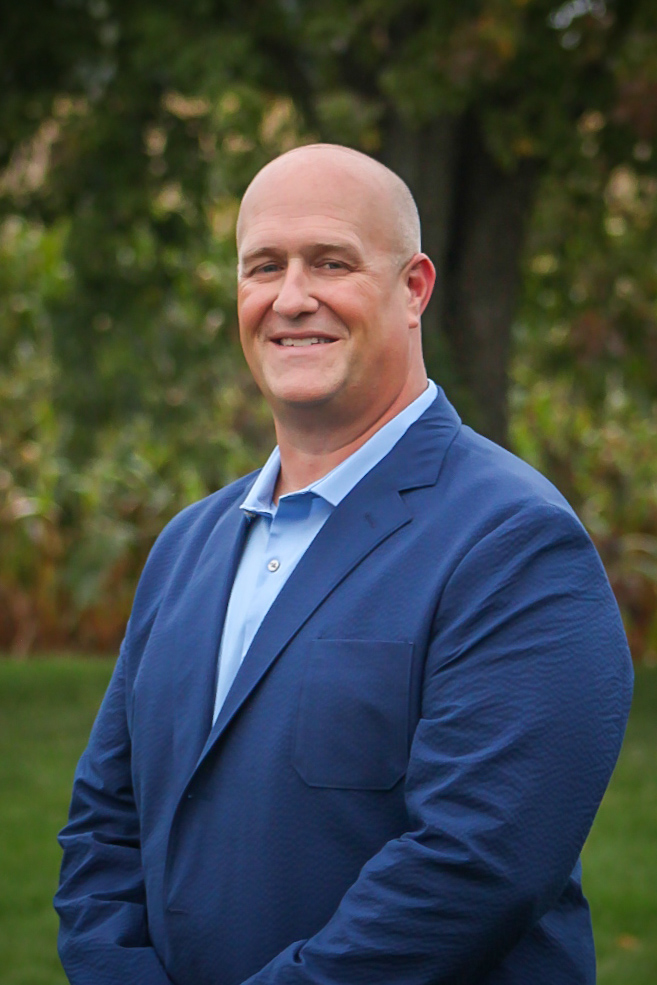
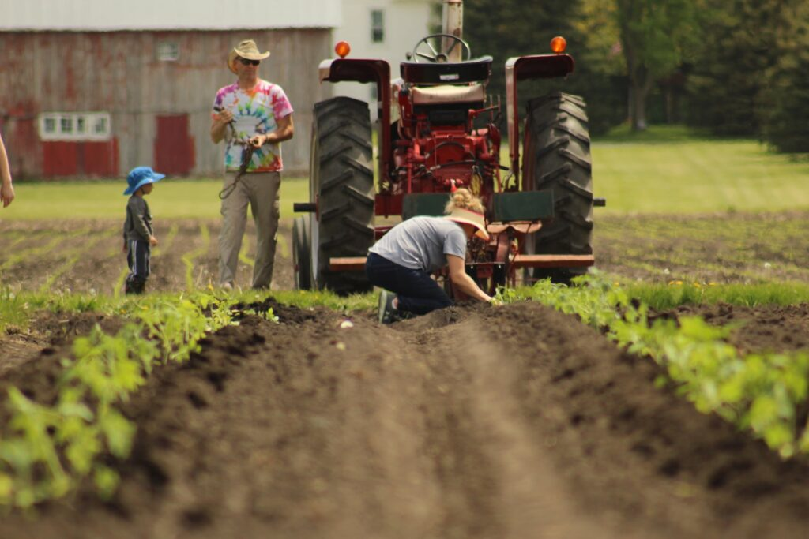
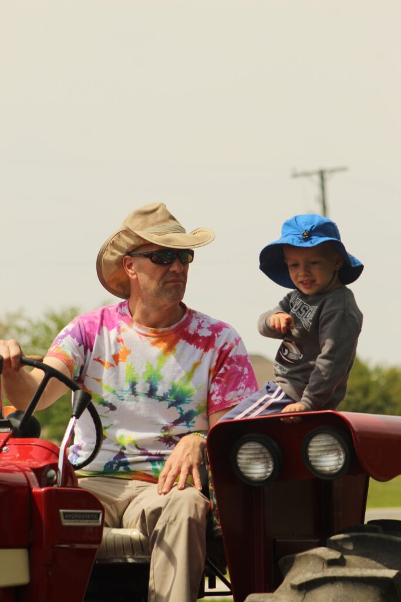

Regional Director · Operator · Builder
If one advances confidently in the direction of his dreams, and endeavors to live the life which he has imagined, he will meet with a success unexpected in common hours. — Henry David Thoreau

Background
For more than 15 years, Tim Stoub has been responsible for the physical environments where older adults live, recover, and thrive. From a single campus to a portfolio of eleven senior living communities across the Midwest, his work has always centered on one question: does this place feel safe, dignified, and cared for?
As Regional Director of Plant Operations at Franciscan Ministries, Tim oversees capital project development, life safety compliance, preventive maintenance, and regulatory readiness across eleven communities. He is building the foundation from the ground up, creating standards, tools, and systems that will outlast any single role.
Before joining Franciscan Ministries, Tim spent 15 years at Peace Village Senior Living in Palos Park, rising from Facilities Manager to Director of Facilities. He oversaw multi-year CapEx budgets, led architect and contractor selection, managed IDPH compliance, and developed leadership programming from the frontline to the boardroom.
His background before senior living includes years of hands-on carpentry and contracting work, including residential renovations, healthcare retrofits, and accessibility improvements. That trade foundation shapes how he approaches every project: detail first, operations second, experience always.
Career
A 25-year career built from the ground up. From journeyman carpenter to regional director, every role added a layer that the next one required.
Consulting & Tools
Tim builds web-based tools purpose-built for senior living plant operations — not generic software adapted for the industry, but applications designed from direct field experience. Available for licensing or custom development through private consulting.
Advisory Services Available
Tim has served on the Peotone CUSD 207-U School Board since 2021, re-elected in 2025, bringing the same discipline he applies to operational management to the governance of a public school district. His focus is grounded in fiscal accountability, transparency, and protecting the long-term health of the district for students and taxpayers alike.
As a Tier 4 district under Evidence-Based Funding, Peotone faces the ongoing challenge of flat year-over-year EBF revenue. Tim has been engaged on deficit reduction strategy, facility consolidation, and analysis of emerging revenue sources including solar energy projects serving Will County.
He believes elected service is not about performing consensus. It is about representing constituents honestly, asking hard questions in public, and standing behind the record. He often casts dissenting votes when the numbers or the process demand it.
Stoub Family Farms
Tim and his wife Katie operate Stoub Family Farms LLC in Peotone, Illinois. What started as a sweet corn operation has grown into a diversified direct-market farm with a community following of over 3,000 — including a U-pick strawberry operation that has become a staple of the local community each season.
The farm grows sweet corn, melons, tomatoes, peppers, and cucurbits alongside the strawberries, with a fertigation system, honey resale, free-range chickens, and a farmers market presence. Every season is managed with the same precision and care Tim brings to facilities work.


Get in Touch
Whether you are exploring consulting services, building out plant operations at a senior living organization, or looking to license operational tools — Tim is happy to have the conversation.
timothy.a.stoub@gmail.com